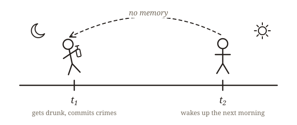
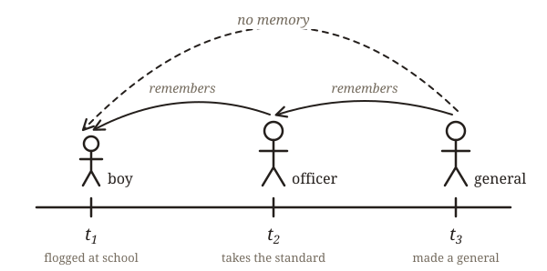
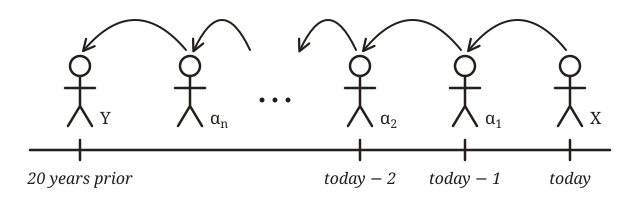
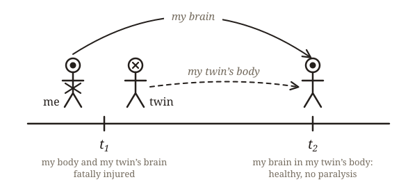
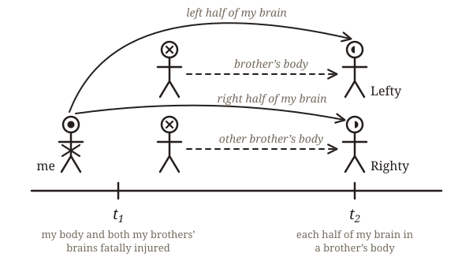

Personal Identity - Parfit
PHIL-1 Lecture notes
1. Two problem cases for the memory criterion
The memory criterion says the following:

There are two cases that we have mentioned that raise a problem for this view:
1.1 The drunk-sober case
In the first case, a person gets drunk, commits various crimes, and then wakes up the next morning with no memory of the night before.

The person there in the morning (the sober person) cannot remember, at that time, any of the experiences of the drunk person from the night before.
So, on Locke’s view, the sober person is not the drunk person. But this seems absurd.
1.2 The boy-officer-general case
This is Thomas Reid’s case:

On Locke’s view, it follows that the boy = the officer, and that the officer = the general. Hence that the boy = the general. Yet it also follows that the boy ≠ the general.
2. Parfit’s revisions to the memory criterion
Parfit wants to modify Locke’s view so that it gets around these objections.
Let’s see how he tries to do that.
2.1 Adding the notion of continuity
Let’s start with The Psychological Criterion section, last paragraph.
Read that paragraph: “Locke suggested...”
Now read the next paragraph: “Locke claimed...”
Now Parfit gets going on revising Locke’s view. Let’s start with this chunk:
There are several ways to extend the experience-memory criterion so as to cover such cases. I shall appeal to the concept of an overlapping chain of experience-memories. Let us say that, between X today and Y twenty years ago, there are direct memory connections if X can now remember having some of the experiences that Y had twenty years ago.
So, based on what Parfit says here, what would make it true to say that, “there is a direct memory connection between X today and Y twenty years ago”?
“X can now remember having some of the experiences that Y had twenty years ago”
What, then, would be an example?
At the current time, X remembers climbing half-dome twenty years ago, and that is in fact something Y did twenty years ago.
Let’s keep reading:
On Locke’s view, this makes X and Y one and the same person. [But] Even if there are no such direct memory connections, there may be continuity of memory between X now and Y twenty years ago.
What does it mean to say that there is “continuity of memory”?
Let’s keep reading.
This would be so if between X now and Y at that time there has been an overlapping chain of direct memories.
And what does that mean?
In the case of most people who are over twenty-three, there would be such an overlapping chain.
So for those of you who are over 23, Parfit is saying, there is verly likely an “overlapping chain of direct memories” between you now and you twenty years ago.
But still, what does it mean for there to be such an “overlapping chain of direct memories” between you today and Y twenty years ago?
We haven’t yet been given the definition. So let’s read on.
In each day within the last twenty years, most of these people remembered some of their experiences on the previous day.
So what does it mean to say that there is an, “overlapping chain of direct memory connections” between X today and Y twenty years ago?
It means something like this:

Parfit goes on:
On the revised version of Locke’s view, some present person X is the same as some past person Y if there is between them continuity of memory.
So, on a first revision of Locke’s view, we end up with the Revised Memory Criterion, which says:
2.1.1 The drunk-sober case is still a problem
Parfit says:
This revision meets one objection to Locke’s view.
Of the two problem cases that we mentioned at the start, which does this revision help with?
Start with the drunk-sober case.
Is there an overlapping chain of direct memories between the sober person and the drunk person?
No? Not obviously, anyway.
So what does the Revised Memory Criterion imply about whether the sober person = the drunk person?
It implies that the sober person is not the drunk person.
2.1.2 The boy-officer-general case is solved
So that case is still a problem. What about the boy-officer-general case?
Here the original memory criterion implied two contradictory things: that the boy is the general, and that the boy is not the general.
Does the revised memory criterion have that same implication?
Why did the original criterion imply that the boy is not the general?
Because the general, at t3, cannot remember any of the experiences of the boy at t1.
But that is no longer a requirement, on the revised view that Parfit has introduced.
There just has to be a chain of memories reaching from the general back to the boy. And there is.
So the revised memory criterion does handle the boy-officer-general case. We still need to deal with the drunk-sober case.
2.2 Adding other psychological connections
Let’s see, then, how Parfit continues. He writes:
We should also revise the view so that it appeals to other facts. Besides direct memories, there are several other kinds of direct psychological connection.
So one way for there to be a “direct psychological connection” between X today and Y at some past time is if there is a direct memory connection.
Now Parfit will introduce some other types of “direct psychological connections.”
He goes on:
One such connection is that which holds between an intention and the later act in which this intention is carried out.
What does that mean? What would be an example?
If Y, at some past time, intends to make rice, and X, right now, fulfills that intention--i.e., makes rice---then that counts.
Other such direct connections are those which hold when a belief, or a desire, or any other psychological feature, continues to be had.
Based on what Parfit says here, what are some other ways for there to be direct psychological connections between Y at some past time and X right now?
There is a belief/desire/hope/fear/anxiety etc. that Y has at some past time, and X has that same belief/desire/hope/fear/anxiety now.
Each instance of that would count as a direct psychological connection between X today and Y at that past time.
2.3 Defining psychological connectedness and continuity
Now read the next long paragraph: “I can now define two general relations...”
2.3.1 The definition of strongly psychologically connected
So what does it mean to say that B at t2 is “strongly psychologically connected” to A at t1?
Look at the last line of the paragraph we just read.
It means that there are “enough” direct connections between them.
And how many is that? Is it a big number or a small number of direct connections?
It’s at least half the number that hold, “over every day, in the lives of nearly every actual person.”
So think of the number of direct connections between you today and you yesterday. Enough is at least half of that.
So it’s a lot?
2.3.2 Why this relation cannot be the criterion of personal identity
Now Parfit goes on:
This relation [meaning the relation of being strongly pyschologically connected to] cannot be the criterion of personal identity.
Parfit means that it cannot be correct to say:
Why not? Skipping ahead a bit, Parfit says:
I am the same person as myself twenty years ago, though I am not now strongly connected to myself then.
2.3.3 Defining the notion of psychological continuity
However, Parfit writes:
I am now strongly connected to myself yesterday, when I was strongly connected to myself two days ago, when I was strongly connected to myself three days ago, and so on.
So there is an “overlapping chain of strong connectedness” between myself today and myself twenty years ago.
So me today is psychologically continuous with me twenty years ago.
3. The Psychological Criterion
Parfit writes:
Though a defender of Locke’s view cannot appeal to psychological connectedness, he can appeal to psychological continuity.
And then he goes on to state something that he calls the Psychological Criterion.
It states the following.
So “strongly psychologically connected with” has been replaced with “psychologically continuous with,” and then two further conditions have also been added.
Let’s pass over condition (ii), since there is nothing in our text about it.
We’ll come back to condition (iii).
3.1 Applying the psychological criterion to the two problem cases
But first, without worrying about those other clauses for now, let’s note that it seems like this criterion will give us the right results in these two cases:
In this case, the general at t3 is psychologically continuous with the boy at t1. So there’s no implication that the boy is not the general.
In this case, while the sober person at t2 has no direct memory connections to the drunk person at t1, there are still lots of other direct psychological connections. So there is still psychological continuity. So it’s still the same person.
3.2 The uniqueness clause
Now let’s go back to that third clause, which is a kind of uniqueness clause.
Why is it necessary?
3.2.1 The whole brain transplant case
Let’s read the first few paragraphs of the next section What Happens When I Divide?
Parfit presents this scenario:

He asks, “Who would this person be?” And he thinks the answer is obvious. It would be me, just in my twin’s body.
What do you think?
Lots of people agree with Parfit. And this is one main source of support for the psychological criterion.
It delivers the result that the post-surgery person is you.
3.2.2 My division
Now consider the case that Parfit calls My Division.
My body is fatally injured, as are the brains of my two brothers. My brain is divided, and each half is successfully transplanted into the body of one of my brothers. Each of the resulting people believes that he is me, seems to remember living my life, has my character, and is in every other way psychologically continuous with me. And he has a body that is very like mine....
Let’s call the brother with the right half of my brain Righty, and the brother with the left half of my brain Lefty.
So we have:

Now ask yourself: what would the psychological criterion imply without the uniqueness clause?
Is Lefty psychologically continuous with me? Yes.
Is Righty psychologically continuous with me? Yes.
So, without uniqueness clause, it would imply that Lefty = me, and that Righty = me.
And what’s problematic about that?
It implies that Lefty = Righty.
And they are not one and the same person. One can be playing tennis while the other watches TV.
And what happens when we add the uniqueness clause back in?
Is Lefty = me?
No, beacuse not uniquely psychologically continuous with me.
Is Righty = me?
No, for the same reason.
So what happened to me?
I no longer exist. No one alive is me.